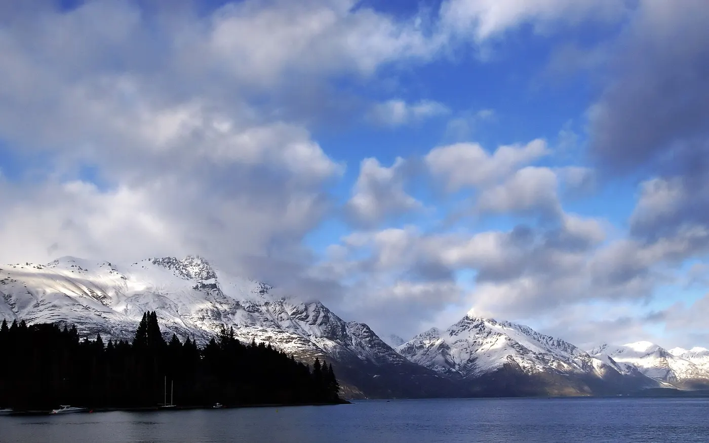
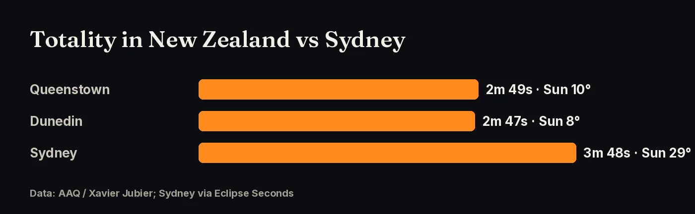
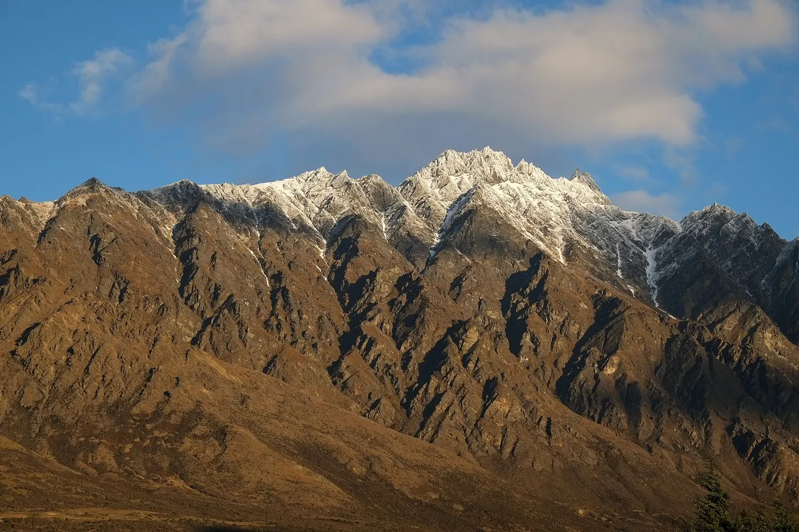
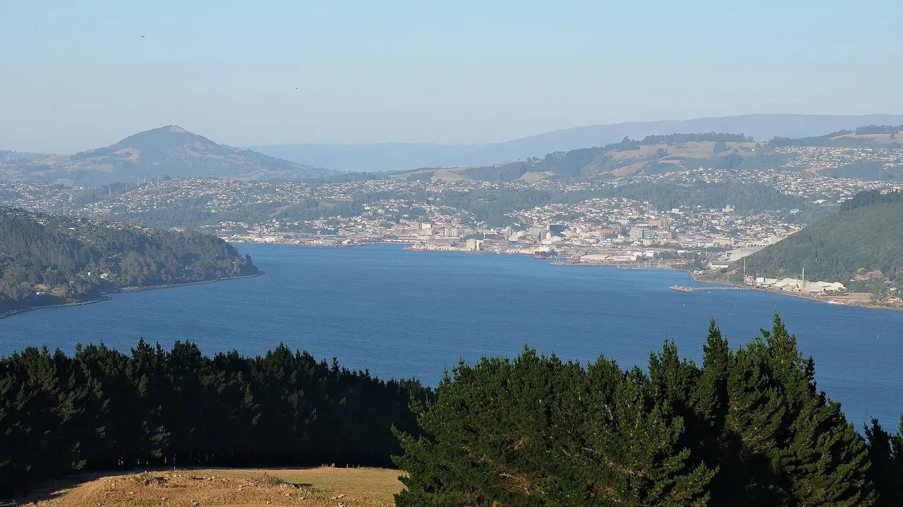
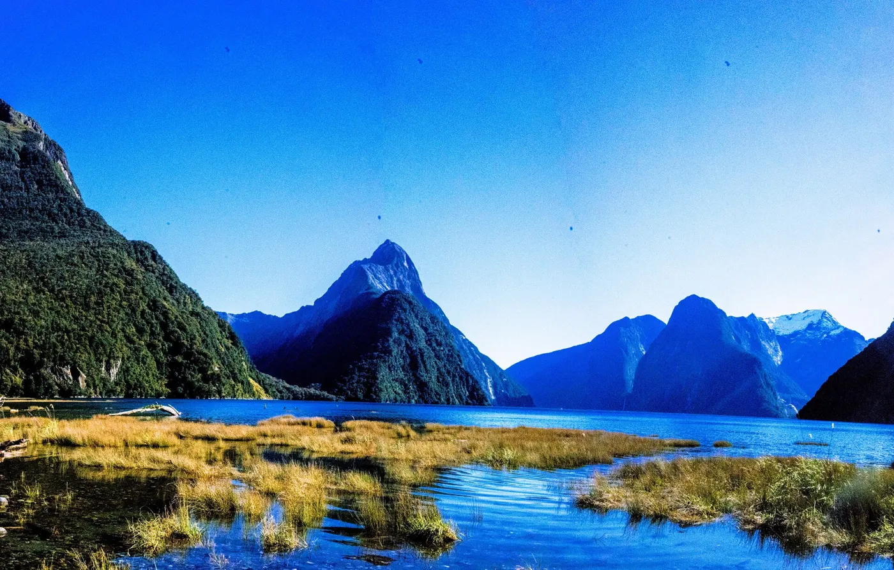

The shadow’s last landfall: a low winter Sun over Queenstown and Dunedin, late on 22 July 2028.
until totality in Queenstown, 22 July 2028 at 4:15 pm NZST

After crossing the Tasman Sea, the shadow sweeps across the South Island late in the afternoon. In New Zealand the path is about 170 km wide, and the Sun is low in the sky.
| Location | Partial begins | Totality begins | Totality | Sun alt. | Partial ends |
|---|---|---|---|---|---|
| Queenstown | 3:07 pm | 4:15:05 pm | 2m 49s | 10° | 5:20 pm |
| Dunedin | 3:09 pm | 4:15:47 pm | 2m 47s | 8° | 5:20 pm |
Times are NZST (UTC+12). Wellington (85%) and Auckland (74%) see only a partial eclipse.

Sources: AAQ (Xavier Jubier data)
With the Sun only about 8–10° up, the most important thing is a clear, unobstructed horizon toward the Sun. That is harder in a mountain valley like Queenstown than on high ground or the coast. The upside is a dramatic low eclipse over snowy peaks. Scout your spot beforehand at the same time of day.


Sources: AAQ (Xavier Jubier data)
AAQ, citing Jay Anderson’s cloud climatology, says the chance of cloud rises as the path moves south-east. New Zealand’s South Island in July is the riskiest part of the path. Fiordland, around Milford Sound, is very wet. Stay flexible, check MetService forecasts, and think about high ground that may be above low cloud.

Sources: AAQ (Xavier Jubier data); eclipsophile.com.
Queenstown and Dunedin airports have flights from Auckland, Christchurch and Australia. July is ski season in Queenstown, so book early. Most visitors need an NZeTA, which you apply for online through Immigration New Zealand.
Click any point on the path map for exact totality times, and vote for where the community gathers.